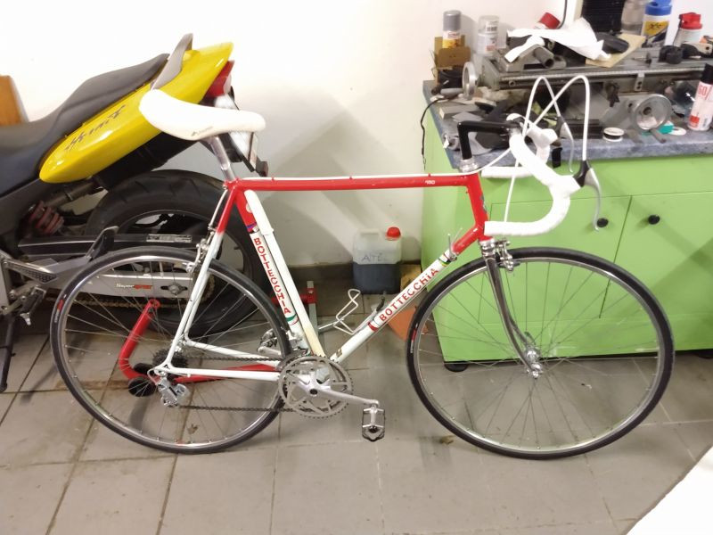

The company was founded from famous italian racer Ottavio Bottecchia. You will find an interesting article in Wikipedia.
Joe's Bottecchia
Great Bottechia Giro, built probably 1987. A joy to ride, though the shifting with Campagnolo Victory needs to get used to - but that's part of the fun!
Well, and you should also get used to the brakes 😉

Joe's Bottecchia
Dancelli
Trivia
The company was founded from another successful italian racer, Michele Dancelli.
Philipps's Dancelli
Dancelli racer in fabulous condition, built possibly 1988. The indexed Shimano 105 shifts almost perfect, and even the brakes do their job!😊
Philipps's Dancelli
Francesco Moser
Trivia
No italian racebike without a sucessful racer behind it - findout more about Francesco Moser...
Florian's Francesco Moser
Wonderful Francesco Moser racer with very original components as delivered probably around 1984 - with Campagnolo Triomphe, and tubular tires,...
Florians's Francesco Moser
KTM
Trivia
KTM - a traditional and admired marque in Austria - no matter if the bikes have an engine or not... Learn more about KTM...
Ahmet's KTM
KTM Strada with Shimano-Components, probably built around 1988. This bike shows signs of long, hard use, but is still an enjoyable ride and definetely has character!👍